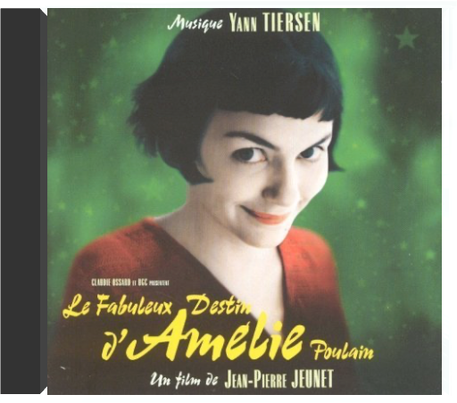

FSM presents one of the most quintessentially "cool" soundtracks ever: Lalo Schifrin's score for the classic urban crime drama, Bullitt (1968). The film stars Steve McQueen as San Francisco police detective Frank Bullitt, caught up with protecting a Chicago mobster from vengeful Mafia hit-men while dealing with an ambitious, sleazy politician portrayed by Robert Vaughn. With its riveting story, realistic settings, taut screenplay and quasi-documentary cinematography, it brought a new depth to McQueen's portrayal of tough characters (this one on the right side of the law). The CD also includes the never-before-released complete film soundtrack itself, recorded at the Warner Bros. scoring stage in Burbank by legendary engineer Dan Wallin. These tracks have been newly mixed and mastered from ½" three-track tape stored at the studio. While some score passages and cues are virtually identical to the record album, many of the film soundtrack's softer, moodier cues were not chosen for the LP-or had certain passages rewritten. And some were dropped from the film itself, so have never been heard before by the public-until now. The booklet includes a perceptive, in-depth essay on the film and its score by John Bender and detailed track-by-track commentary by Alexander Kaplan. Bullitt is an essential purchase for any "cool" soundtrack collection (or collector), and adds one more title to FSM's expanding catalog of scores by a living legend of film music.  Lalo Schifrin - Bullitt: Original Motion Picture Soundtrack - LP Vinyl Album  le fabuleux destin d'amélie poulainle fabuleux destin d'amélie poulain Film encensé par la critique, Le Fabuleux Destin d'Amélie Poulain ne pouvait s'offrir qu'au plus parisien des musiciens bretons : Yann Tiersen. Auteur de plusieurs albums (L'Absente, Le Phare), dont certains titres de la bande originale sont d'ailleurs tirés, le compositeur offre à Montmartre ses plus belles notes depuis des lustres. "La Valse d'Amélie" nous ramène des décennies en arrière, pourtant le morceau semble on ne peut plus présent. Moderne tout en étant nostalgique, parisienne tout en étant teintée de couleurs provinciales, la musique du Fabuleux Destin d'Amélie Poulain est une pure merveille de fraîcheur ("La Redécouverte") et de spontanéite ("Le Moulin"). Simple, d'orchestration reduite – piano, accordéon, guitare – la musique respire la poésie de son auteur et comporte la même vivacité que le brillant metteur en scène Jean-Pierre Jeunet. Humaine, proche de nous, la bande originale du Fabuleux Destin d'Amélie Poulain devient, de par son lyrisme et son charme, le fabuleux destin de celui qui l'écoutera. —Didier Leprêtre |  Limited 180gm audiophile vinyl LP pressing. Lee Dorsey began his career as a lightweight boxer in the early 1950s and moved on to become an influential African American pop and R&B singer during the 1960s. His successful period began when he met songwriter and record producer Allen Toussaint. In 1970, Dorsey recorded the Yes We Can album again with Toussaint together with the support band The Meters. Several of the songs were covered by major artists who scored hits with them later that decade; 'Yes We Can' by The Pointer Sisters and 'Sneakin' Sally Thru The Alley' by Robert Palmer. The other songs are straight up funky tracks and have a variety of styles and sounds. Included are the protest soul recording 'Who's Gonna' Help Brother Get Further' and the somewhat hilarious comedy song 'Would You'. All in all it stands as a great soul album for that time. |

Julien
Collection Total:
2 016 Items
2 016 Items
Last Updated:
Dec 23, 2023
Dec 23, 2023


 Made with Delicious Library
Made with Delicious Library